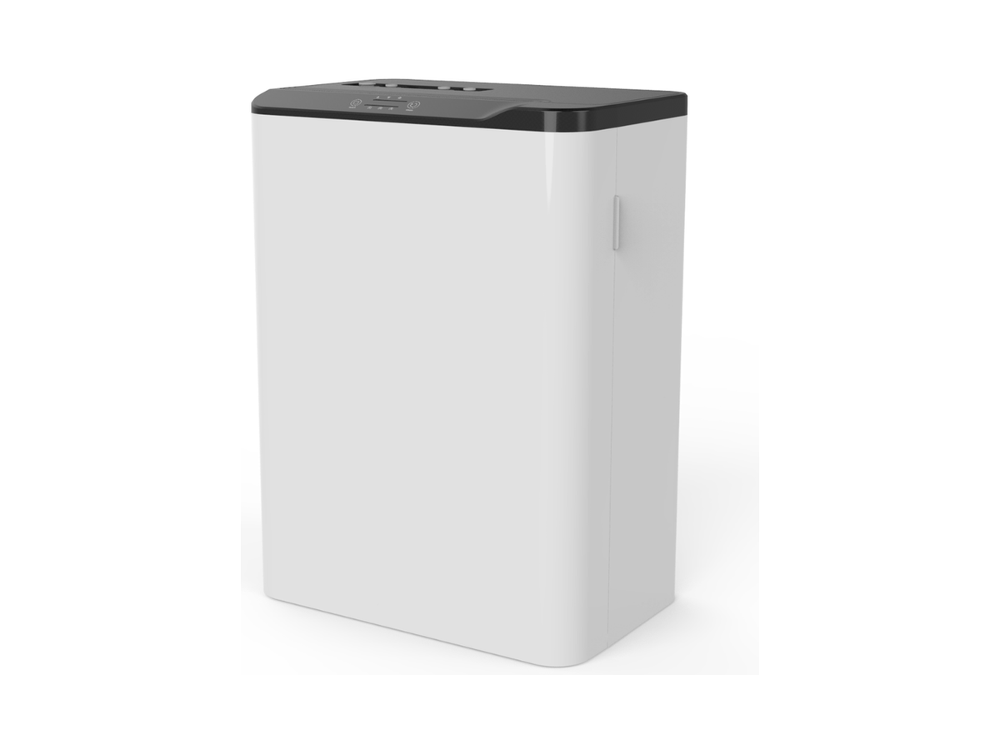

Bawah Wastafel
Bawah WastafelRP-U07
Pemurni RO bawah wastafel 400–600 GPD
SKU: RP-U07
MOQ: Konfirmasikan saat bertanya
Beranda/Produk/Sistem RO Bawah Wastafel/ RP-U11

Sistem RO Bawah Wastafel
Pemurni RO tiga kartrid (AM606R)
RP-U11 adalah keluarga RO bawah wastafel tiga kartrid yang dipimpin RP-U13 (600/800/1000G, tinggi 427 mm, volume nominal 6000 L), bersama RP-U11 (1000G tetap, tinggi 400 mm) — ditambah dua varian RP-U13 berkapasitas lebih tinggi (1000/1200G dan 800/1000G). Spesifikasi dikonfirmasi per model dan pesanan.
Tegangan / frekuensi dapat dikonfigurasi sesuai negara tujuan. Konfigurasi lain dikonfirmasi per pesanan.
RP-U11 adalah keluarga RO bawah wastafel tiga kartrid yang dipimpin opsi utama RP-U13 (600 / 800 / 1000 GPD, 315 × 203 × 427 mm, volume air murni nominal 6000 L). Keluarga ini juga mencakup opsi tetap 1000 GPD (315 × 203 × 400 mm, 2.6 L/min, 4500 L) dan dua opsi RP-U13 berkapasitas lebih tinggi pada 1000 / 1200 GPD dan 800 / 1000 GPD. Opsi utama beroperasi pada ≤53 dB(A) dengan rasio air murni terhadap buangan 2:1 dan daya nominal 65 / 95 / 130 W. Produk ini dibuat untuk pemilik merek yang menginginkan keluarga RO bawah wastafel yang tenang dengan pilihan kapasitas.
Berapa jumlah pesanan minimum?
Pesanan pertama adalah 200 unit per model, dan pemesanan ulang adalah 500 unit.
Bisakah saya memesan sampel sebelum pesanan massal?
Ya. Sampel siap dalam 15 hari, dan biaya sampel dikembalikan pada pesanan massal pertama Anda. Pesanan massal membutuhkan 40 hari setelah persetujuan sampel dan dikirim FOB Shenzhen.
Opsi mana yang harus saya pilih?
Cantumkan RP-U11 dan sebutkan opsinya: RP-U11 1000G, RP-U13 600/800/1000G, RP-U13 1000/1200G, atau RP-U13 800/1000G. Opsi utamanya adalah RP-U13 600/800/1000G.
Empat opsi — cantumkan RP-U11 dan sebutkan opsinya (RP-U11 1000G, RP-U13 600/800/1000G, RP-U13 1000/1200G, atau RP-U13 800/1000G).
Arahkan kursor ke gambar varian untuk melihat spesifikasinya. Di layar sentuh, ketuk gambar.


Spesifikasi lengkap setiap varian, berdampingan. Tabel spesifikasi di bawah menunjukkan nilai opsi utama.
| Spesifikasi | RP-U11-1 — 600/800/1000G (AM606R) | RP-U11-2 — varian 1000G (M906R) | RP-U11-3 — varian 1000/1200G (AM901R) | RP-U11-4 — varian 800/1000G (AM902R) |
|---|---|---|---|---|
| Kapasitas RO | 600 / 800 / 1000 GPD | 1000 GPD | 1000 / 1200 GPD | 800 / 1000 GPD |
| Laju alir nominal | Dikonfirmasi per pesanan | 2.6 L/min | ≥2.62 L/min | ≥2.1 / 2.62 L/min |
| Filtrasi | PP+C + RO + pasca-karbon | PPC + RO + C | PPC + RO + pasca-karbon | PP + serat karbon + RO + pasca-karbon |
| Murni : buangan | 2:1 | Dikonfirmasi per pesanan | Tanpa air buangan | 2:1 |
| Kebisingan | ≤53 dB(A) | Dikonfirmasi per pesanan | ≤53 dB(A) | ≤53 dB(A) |
| Daya terukur | 65 / 95 / 130 W | Dikonfirmasi per pesanan | 120 W | 90 W |
| Dimensi (W×D×H) | 315 × 203 × 427 mm | 315 × 203 × 400 mm | 440 × 158 × 430 mm | 440 × 135 × 400 mm |
| Masuk | 0.1–0.4 MPa; 5–38°C | 0.1–0.4 MPa / 0.4–0.8 MPa | 0.1–0.4 MPa; 5–38°C | 0.1–0.4 MPa; 5–38°C |
| Volume air murni terukur | 6000 L | 4500 L | Dikonfirmasi per pesanan | Dikonfirmasi per pesanan |
| Tegangan / frekuensi | Dapat dikonfigurasi sesuai negara tujuan | Dapat dikonfigurasi sesuai negara tujuan | Dapat dikonfigurasi sesuai negara tujuan | Dapat dikonfigurasi sesuai negara tujuan |
11 baris spesifikasi dari katalog ROPureOEM.
| Kapasitas RO | 600 / 800 / 1000 GPD |
|---|---|
| Laju alir nominal | Dikonfirmasi per pesanan |
| Volume air murni terukur | 6000 L |
| Filtrasi | PP+C + RO + pasca-karbon |
| Dimensi | 315 × 203 × 427 mm |
| Murni : buangan | 2:1 |
| Kebisingan | ≤53 dB(A) |
| Daya terukur | 65 / 95 / 130 W |
| Masuk | 0.1–0.4 MPa; 5–38°C |
| Tegangan / frekuensi | Dapat dikonfigurasi sesuai negara tujuan |
| Konfigurasi lain | Dikonfirmasi per pesanan |
Spesifikasi diambil dari katalog ROPureOEM. Jika suatu nilai belum dikonfirmasi, nilai tersebut dicantumkan sebagai "Dikonfirmasi per pesanan" — kami tidak menerbitkan angka yang belum dikonfirmasi.
Bawah WastafelPemurni RO bawah wastafel 400–600 GPD
SKU: RP-U07
MOQ: Konfirmasikan saat bertanya
 Bawah Wastafel
Bawah WastafelRO bawah wastafel dengan pemanas tangki penyimpanan
SKU: RP-U08
MOQ: Konfirmasikan saat bertanya
 Bawah Wastafel
Bawah WastafelPemurni RO akses depan berkapasitas tinggi
SKU: RP-U09
MOQ: Konfirmasikan saat bertanya
 Bawah Wastafel
Bawah WastafelPemurni RO kompak dua kartrid
SKU: RP-U12
MOQ: Konfirmasikan saat bertanya